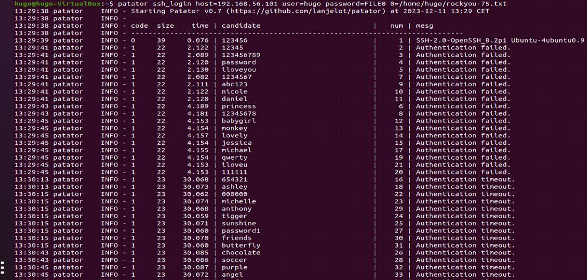
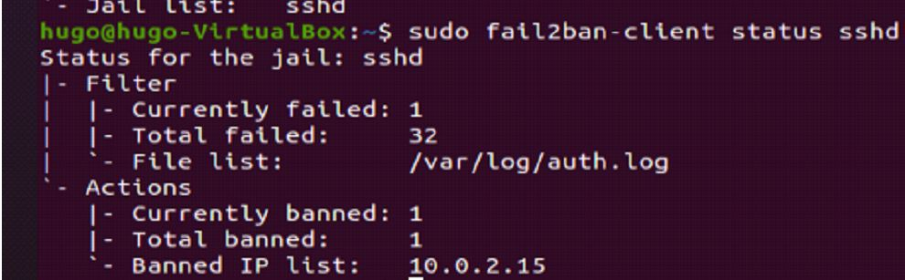

Fail2Ban et Patator
Un tuto d’installation de Fail2Ban est disponible en cliquant ici.
J’ai ensuite installé patator en suivant cette documentation.
Puis j’ai attaqué la machine possédant fail2ban.

L'adresse ip de la machine avec patator se fait ensuite bannir suite aux nombreux essais
